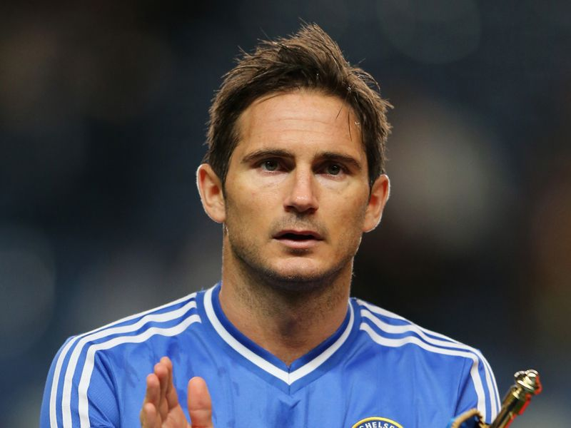
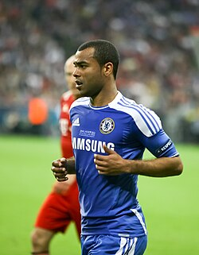

Chelsea Football Club
Beste voetbalclub van London (Engeland)
Deze website vertelt over de club:

INLEIDING
De club werd opgericht in 1905 en speelt in de Premier League. Chelsea speelt zijn thuiswedstrijden op Stamford Bridge dat 40.343 plaatsen telt. Chelseas traditionele uitrusting bestaat uit een volledig blauw shirt en short, wat de club de bijnaam The Blues opleverde. Na winst van de UEFA Conference League in 2025 werd Chelsea de enige club ooit die de UEFA Champions League, de UEFA Cup Winners' Cup, de UEFA Europa League en de UEFA Conference League wist te winnen.
SPELERS
In dit seizoen 2026-2027 spelen twee belgen mee in het eerste elftal: Romeo Lavia en Mike Penders. Voor de rest zijn er grote namen zoals Morgan Rogers, Cole Palmer, Maxence Lacroix, Joao Pedro, Pedro Neto, Jorrel Hato, Moises Caicedo. Spelers die nieuw zijn gekomen dit seizoen zijn: Pep Chavarria, Marco Palestra, Morgan Rogers, Geovany Quenda, Valentin Barco, Alecsandr Satpaev, ... Bekende oude spelers zijn: Ashley Cole, John Terry, Cezar Azpilicueta, Frank Lampard, ...



AANKOOPBELEID
Chelsea staat bekend als een club die veel (dure) spelers koopt. Sinds de overname van de Russische oligarch Roman Abramovitsj in 2003 komen grote spelers naar de club in Londen. Er zijn meerdere miljoenaankopen gedaan[20]. Velen hiervan zijn gefaald om aan de grote verwachtingen te voldoen. Voorbeelden hiervan zijn spelers als Schevchenko, Fernando Torres, Mateja Kesman en Hernan Crespo. In de zomer van 2018 heeft Chelsea ongeveer 136 miljoen uitgegeven met Pulisic van Borussia Dortmund als duurste aankoop (64 miljoen). Voorafgaand aan het seizoen 2019/2020 werd Mateo Kovacic van Real Madrid aangetrokken voor 45 miljoen euro. In de zomer van 2020 zijn ook meerdere recordaankopen gedaan, waaronder Kai Havertz, Hakim Ziyech, Ben Chilwell en Timo Werner. De laatste jaren werd ook wel meer gefocust op de spelers afkomstig uit de eigen jeugdopleiding, die wordt aanzien als een van de beste in Europa. Zo speelden jeugdproducten als Tammy Abraham, Andreas Christensen, Callum Hudson-Odoi, Reece James en Mason Mount allemaal een belangrijke rol in de gewonnen Champions League in het seizoen 2020-2021. In augustus 2021 werd voormalig Chelsea speler Romelu Lukaku overgenomen van Internazionale voor 115 miljoen euro, toen een recordbedrag voor de club om één enkele speler aan te trekken.[21]